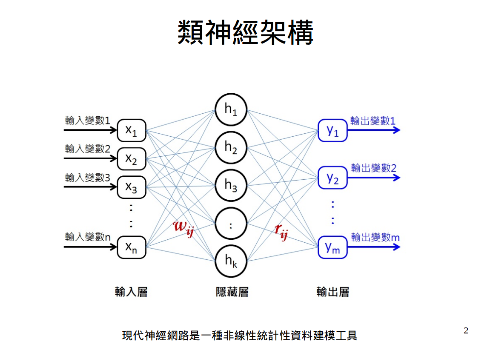

MLP(Regression)¶
Type Of Machine Learning¶
| Output Space | Data Label | Protocol | Input Space |
|---|---|---|---|
| Binary Classification | Supervised | Online | Raw |
 該範例的結構
Info
In this sample is Fully connected three-layered MLP network with 150 neurons in the hidden layer.
- Full connected:全連接層
- MLP (多層感知器):加上activation function跟反向傳遞演算法
Code
from __future__ import print_function import tensorflow as tf import numpy as np import matplotlib.pyplot as plt import os import math def add_layer(inputs, in_size, out_size, activation_function=None): Weights = tf.Variable(tf.random_normal([in_size, out_size])) biases = tf.Variable(tf.zeros([1, out_size]) + 0.1) Wx_plus_b = tf.matmul(inputs, Weights) + biases if activation_function is None: outputs = Wx_plus_b elif activation_function =="Swish": outputs = Wx_plus_b/(1+tf.exp(-1*Wx_plus_b)) else: outputs = activation_function(Wx_plus_b) return outputs,Weights,biases def nu(): # define placeholder for inputs to network xs = tf.placeholder(tf.float32, [None, 1]) ys = tf.placeholder(tf.float32, [None, 1]) # add hidden layer 隱藏層 neural_node=150 l1 ,Weights1,biases1= add_layer(xs, 1, neural_node, activation_function=tf.sigmoid) # add output layer 輸出層 prediction ,Weights2,biases2= add_layer(l1, neural_node, 1, activation_function=None) # the error between prediction and real data loss = tf.reduce_mean(tf.reduce_sum(tf.square(ys-prediction), reduction_indices=[1])) #loss=tf.square(ys-prediction) train_step = tf.train.RMSPropOptimizer(0.01).minimize(loss) # important step sess = tf.Session() init = tf.global_variables_initializer() sess.run(init) return sess,train_step,xs,ys,prediction x_data = np.linspace(-5, 10, 1000)[:, np.newaxis] noise = np.random.normal(0, 0.05, x_data.shape) y_data = 2*x_data**3*(np.sin(x_data)/2) - 0.5 + noise*300 # plot the real data fig = plt.figure() ax = fig.add_subplot(1,1,1) ax.scatter(x_data, y_data) lines = ax.plot(3, 3, 'r-', lw=1) ax.legend(labels=['prediction line','y=2$x^{3(sin(x)/2)}-0.5+noise*300$'],loc='best') plt.ion() plt.pause(2.5) plt.show() # start sess,train_step,xs,ys,prediction=nu() for i in range(100000): # training sess.run(train_step, feed_dict={xs: x_data, ys: y_data}) if i % 300 == 0: # to visualize the result and improvement try: ax.lines.remove(lines[0]) except Exception: pass x_data2 = np.linspace(-5, 10, 5000)[:,np.newaxis] prediction_value = sess.run(prediction, feed_dict={xs: x_data}) # plot the prediction lines = ax.plot(x_data, prediction_value, 'r-', lw=5) plt.pause(0.000000001)